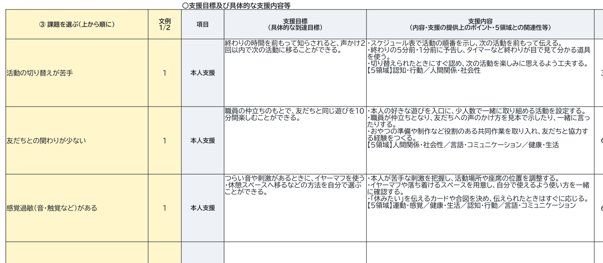
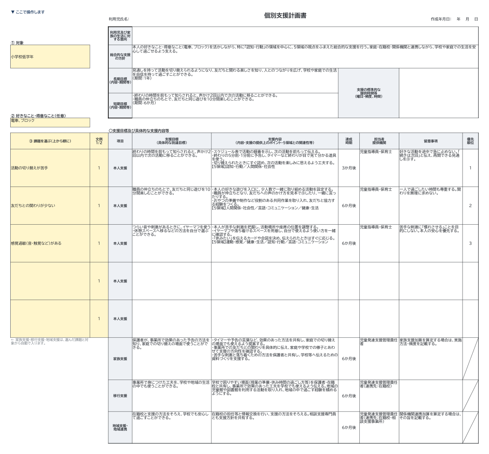
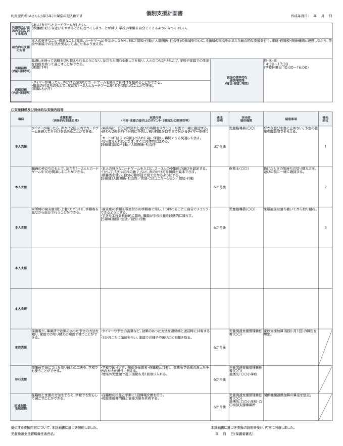
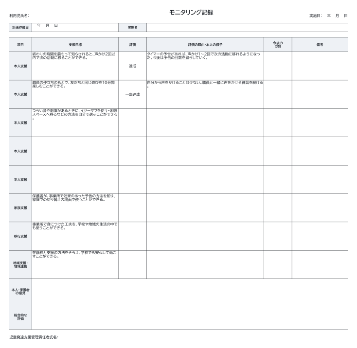
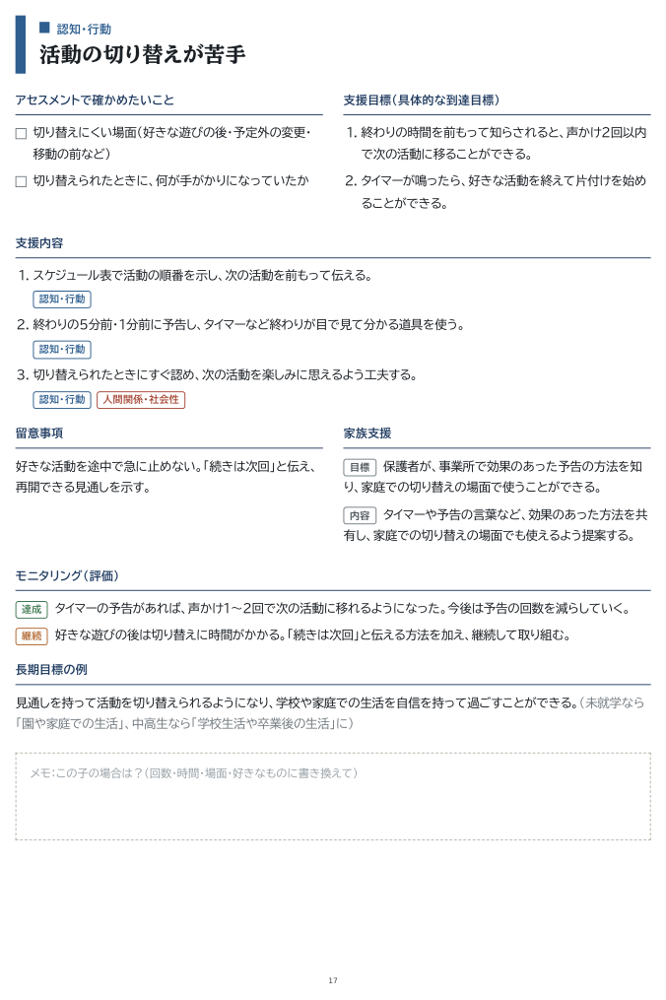
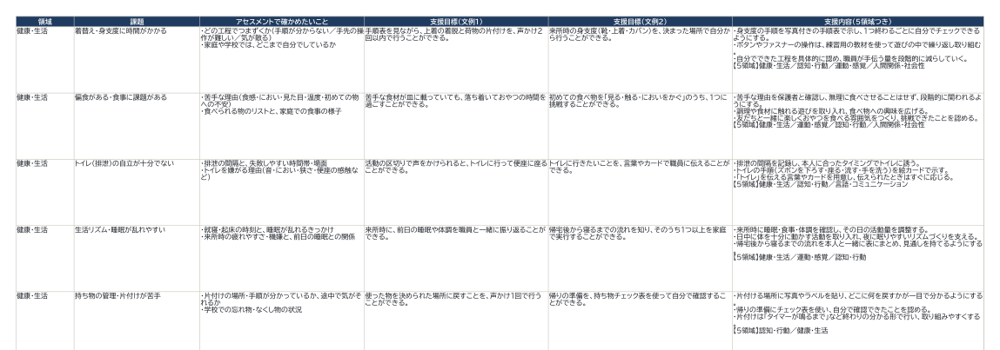

放デイ・児発の児発管さんへ
課題を選ぶだけで、
課題を選ぶだけで、
文例が入る計画書。
個別支援計画の文例つきExcelセット
いつものExcelのまま、プルダウンで課題を選ぶと、支援目標・支援内容（5領域つき）・留意事項・家族支援・移行支援に文例が入ります。あとは、お子さまに合わせて書き直すだけ。モニタリング記録と、印刷できる文例全集（PDF）もセットです。
3,980円（税込）・買い切り
販売開始の準備中ですまずは無料の白紙様式を試す
- 購入後すぐダウンロード
- 事業所内なら何人でも
- アップデート無料

こんなこと、ありませんか？
利用児全員分の計画書。毎回白紙から考えて、気づけば夜になっている。
改定で入った5領域の書き方、これで合っているのか自信がない。
計画が終わったと思ったら、モニタリングの文章もまた一から。
書き始めの「最初の一文」を、Excelが用意します。
使い方は、3つだけ
1
課題を選ぶ
黄色いセルで、お子さまの区分と気になる課題を選びます。課題は31種類。上から順に優先順位になります。

2
その子に合わせて書き直す
入った文例を、回数・時間・場面・好きなものに合わせて書き直します。セルに上書きすればOK。書き方に迷ったら、架空のお子さまで書いた「記入例」シートが目安になります。

3
印刷して、半年後はモニタリング
A4横に収まるよう設定済み。半年後は「モニタリング記録」シートで評価を選ぶと、評価の理由の文例が入ります。支援目標は計画書から自動で写ります。

セットの中身
Excel
文例つき様式セット
- 計画書（文例入り）… 課題を選ぶと文例が入る
- 計画書（白紙）… 一から書くとき用
- モニタリング記録 … 評価を選ぶと文例が入る
- 記入例 … 架空のお子さまで書いた見本
- 文例一覧 … 31課題すべて。オリジナル文例も追加できる
PDF
個別支援計画 文例全集（37ページ）
- 課題ごとに1ページ：アセスメントの視点・支援目標・支援内容・留意事項・家族支援・モニタリング
- 書く前に押さえる6つのポイント（国の記載のポイントから）
- 年齢別の移行支援・地域支援の文例
- メモ欄つき。印刷して会議や研修にも
付録
はじめにお読みください
- 3分でわかる使い方
- 動作環境（Excel・Googleスプレッドシート・LibreOffice）
- ご利用の範囲とアップデートのご案内


無料のものとの違い
| このサイトの 下書きツール（無料） | 白紙の様式 （無料） | 文例つき Excelセット | |
|---|---|---|---|
| 参考様式と同じ項目 | ○ | ○ | ○ |
| 課題を選ぶと文例が入る | ○（ブラウザで） | ― | ○（Excelで） |
| Excelで保存・編集・印刷 | コピーして貼る | ○ | ○ |
| モニタリング記録の文例 | 文例ページで閲覧 | ― | ○ 評価を選ぶと入る |
| 記入例 | ― | ― | ○ |
| 事業所オリジナルの文例を追加 | ― | ― | ○ |
| 印刷用の文例全集（PDF） | ― | ― | ○ 37ページ |
| ネットにつながっていなくても使える | ― | ○ | ○ |
| 価格 | 無料 | 無料 | 3,980円（税込） |
個別支援計画 文例つき様式セット
放課後等デイサービス・児童発達支援／5領域対応（令和6年度報酬改定）
- Excel（計画書・モニタリング記録・記入例・文例一覧）＋ 文例全集PDF（37ページ）
- 決済後すぐにダウンロード（ZIP）
- 購入された事業所の中なら何人でも利用可
- 文例の追加・制度改定への対応は無料アップデート
よくある質問
- Macでも使えますか？
- はい。Mac版のExcel（2016以降・Microsoft 365）で使えます。Googleスプレッドシートや、無料のLibreOfficeでも、プルダウンと文例の自動入力が動きます（フォントやセルの高さが少し変わることがあります）。
- 事業所の職員みんなで使ってもいいですか？
- はい。ご購入いただいた事業所（同じ法人の複数事業所を含みます）の中なら、何人でお使いいただいてもかまいません。
- うちの自治体の様式と少し違います。
- Excelなので、列の幅や項目名、事業所名の追加などは自由に変えられます。こども家庭庁の参考様式と同じ項目で作っているので、多くの様式にそのまま書き写せます。
- 自分たちの文例も追加できますか？
- できます。「文例一覧」シートの一番下の黄色い行に書き足すと、計画書の「課題を選ぶ」プルダウンに自動で出てきます。
- どうやって届きますか？
- 決済が終わると、すぐにダウンロードできます（ZIPファイル）。Excel・PDF・説明書が入っています。
- 領収書はもらえますか？
- はい。お問い合わせから、注文番号と宛名（事業所名）をお知らせください。PDFの領収書をお送りします。
- 返品はできますか？
- デジタル商品のため、ご購入後の返品・返金はお受けしていません。ファイルが開けないなどの不具合は、交換で対応します。
- アップデートはありますか？
- 文例の追加や制度改定への対応は、購入された方へ無料でお届けします。
- お子さまの情報をどこかに送りますか？
- いいえ。Excelファイルの中だけで動くので、入力した内容が外に送られることはありません。
文例は、計画を書き始めるための下書きです。お子さまのアセスメントと本人・家族の意向に合わせて必ず書き直してください。様式や記載方法の細かな求めは自治体によって異なります。